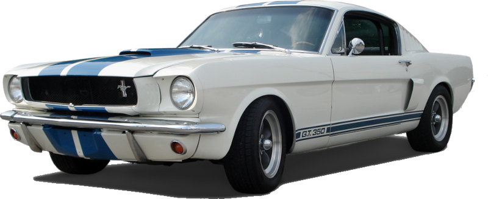

A Evolução do Mustang ao Longo de 60 Anos
O Ford Mustang é amplamente reconhecido como um dos carros esportivos mais icônicos e longevos da história automotiva, com mais de seis décadas de sucesso. Ao longo de suas seis gerações, o Mustang evoluiu tanto em design quanto em performance, sempre adaptando-se às exigências e tendências de cada era.
Primeira Geração (1964-1973)

O Mustang foi lançado em 1964, marcando a indústria com sua acessibilidade e estilo esportivo. Equipado com uma variedade de motores, incluindo o famoso V8 de 289 polegadas cúbicas (4,7 litros) que gerava 200 cavalos de potência, a recepção foi estrondosa. O carro rapidamente se tornou um fenômeno, com mais de um milhão de unidades vendidas em apenas 18 meses.
Segunda Geração (1974-1978)
A segunda geração do Ford Mustang, produzida de 1974 a 1978, é conhecida como Mustang II. Essa geração foi uma resposta à crise do petróleo e às novas regulamentações de segurança, resultando em um design mais compacto e econômico.
O Mustang II apresentava um estilo mais suave e um interior mais confortável, com ênfase na eficiência de combustível. Disponível em versões coupé e hatchback, oferecia uma variedade de motores, incluindo opções de quatro e seis cilindros, além de um V8.
Embora tenha recebido críticas por ser menos potente que as gerações anteriores, o Mustang II conquistou uma base de fãs leais e ajudou a manter a popularidade da marca durante uma época de mudanças no mercado automotivo. Essa geração é frequentemente lembrada por sua versatilidade e pela adaptação às novas demandas dos consumidores.
Terceira Geração (1979-1981)
A terceira geração do Ford Mustang, produzida de 1979 a 1981, é conhecida como Mustang "Fox Body". Esta geração trouxe um design mais angular e moderno, com uma plataforma mais leve, que melhorou a eficiência de combustível e a performance.
O Mustang III oferecia uma variedade de opções de motorização, incluindo motores de quatro, seis e oito cilindros. Essa diversidade permitiu que os consumidores escolhessem entre eficiência e desempenho. A geração também se destacou pela personalização, com várias versões e pacotes disponíveis.
O Mustang Fox Body ajudou a revitalizar a imagem do modelo durante uma época em que a indústria automobilística estava se adaptando a novas regulamentações e ao aumento dos preços do combustível. Essa geração é lembrada por sua durabilidade e pela base de fãs dedicada, que ainda valoriza os modelos desse período.
Quarta Geração (1982-1993)
A quarta geração do Ford Mustang, produzida de 1982 a 1993, manteve a plataforma "Fox Body" e apresentou um design mais aerodinâmico. Essa geração oferecia uma variedade de motores, incluindo quatro cilindros turbo e V8, com destaque para o Mustang GT.
Inovações como injeção eletrônica e suspensão melhorada proporcionaram melhor desempenho e conforto. O Mustang IV se tornou um ícone dos anos 80 e 90, consolidando sua popularidade entre os entusiastas e deixando uma marca duradoura na cultura automotiva.
Quinta Geração (1994-2004)
A quinta geração do Ford Mustang, produzida de 1994 a 2002, trouxe um redesign significativo e um retorno ao estilo clássico. Com uma aparência mais robusta e moderna, os modelos dessa geração destacavam-se pelo design agressivo.
Essa geração ofereceu motores V6 e V8, com o Mustang GT se tornando um favorito entre os entusiastas por sua performance melhorada. A suspensão foi refinada para uma condução mais confortável e esportiva.
Além disso, o Mustang V se beneficiou de tecnologias mais modernas e maior atenção à segurança. Essa geração ajudou a reviver o interesse pelo Mustang, tornando-o um ícone duradouro no cenário automotivo americano.
Sexta Geração (2015-2023)
A sexta geração do Ford Mustang, produzida de 2015 a 2023, marcou um grande avanço tecnológico e de design, apresentando uma estética mais agressiva e moderna, inspirada nas raízes clássicas do modelo. Esta geração trouxe melhorias significativas em termos de desempenho, com opções de motores turbo de quatro cilindros, V6 e o potente V8 do Mustang GT.
A suspensão foi refinada para oferecer melhor manuseio e conforto, e a inclusão de recursos tecnológicos, como tela touchscreen e sistemas de assistência ao motorista, modernizou a experiência a bordo. O Mustang também continuou a ser um ícone cultural, aparecendo em filmes e eventos automotivos. Com edições especiais, como o Mustang Bullitt e o Shelby GT500, essa geração solidificou ainda mais o legado do Mustang como um verdadeiro carro esportivo.
Sétima Geração (2024-presente)
A sétima geração do Ford Mustang, que começou a ser produzida em 2024, apresenta um design atualizado e mais agressivo, mantendo a essência clássica do modelo. Essa geração introduz novas tecnologias, incluindo uma tela digital central mais avançada e sistemas de assistência ao motorista aprimorados.
As opções de motorização incluem versões de quatro cilindros turbo e V8, mantendo a tradição de desempenho. A ênfase na eficiência de combustível e na dinâmica de condução é evidente, com melhorias na suspensão e na aerodinâmica.
Além disso, a sétima geração promete um foco em experiências conectadas, refletindo as tendências atuais do mercado automotivo. O Mustang continua a ser um símbolo de performance e estilo, atraindo tanto entusiastas quanto novos fãs.
Evolução de Design
- 1960s: Lançamento com design elegante e musculoso, atraindo jovens.
- 1970s: Aumento de tamanho e peso, menos esportividade.
- 1980s: Formas angulares e influência de esportivos da época.
- 1990s: Design contemporâneo com elementos clássicos.
- 2000s: Retorno ao estilo nostálgico, homenageando os clássicos.
- 2010s e 2020s: Visual agressivo e aerodinâmico, tecnologia avançada.
Evolução das Especificações Técnicas
As especificações técnicas também acompanharam a evolução do Mustang. A primeira geração oferecia motores como o V8 de 200 cavalos, enquanto a segunda enfrentou restrições, com motores de até 140 cavalos. Na terceira geração, a potência voltou a crescer, com um V8 de 5,0 litros gerando 225 cavalos. A quarta geração trouxe motores mais avançados, com até 300 cavalos, e a quinta geração elevou ainda mais o desempenho, chegando a 400 cavalos. Por fim, a sexta geração oferece os motores mais potentes da história do Mustang, com o Shelby GT500 entregando 760 cavalos.
Comparação entre o Primeiro Mustang e o Modelo Atual
O primeiro Mustang, lançado para competir com carros como o Plymouth Barracuda e o Chevrolet Camaro, foi remodelado em 1969, oferecendo seis versões esportivas. O Mach 1 era o mais refinado da linha, com detalhes agressivos, como faixas pretas e um capô com entradas de ar.
Em contraste, o Mustang GT Performance atual possui faróis de LED com assinatura visual em três blocos de luz, e a grade exibe o famoso emblema do cavalo. As rodas de 19 polegadas com acabamento diamantado e pintura escura complementam o visual moderno. O retorno do Mach 1 em 2023, após 25 anos de hiato, foi um sucesso, inicialmente limitado a 6.500 unidades, mas a demanda levou a Ford a estender a produção para 16.000 carros, com um V8 de 4,6 litros e 300 cavalos de potência.
O Ford Mustang continua a ser uma lenda, mantendo seu espírito esportivo e se adaptando ao longo dos anos, permanecendo como um símbolo duradouro na cultura automobilística mundial.